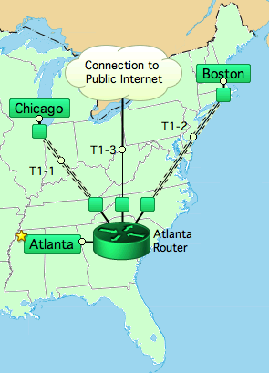

Documents InterMapper and InterMapper RemoteAccess 5.2.2

InterMapper is a network monitoring and alerting program. It continually tests routers, servers, hubs, and other computer devices that are attached to your network. If InterMapper detects a failure, it sends notifications to one or more individuals via sounds, e-mail, pagers, or by running a program to correct the problem.
Use this on-line manual to learn about the InterMapper Software Developer Kit (SDK) — the set of tools you can use to customize how InterMapper monitors the network, and to display data about those results.
Customizing InterMapper's Probes
Explains how to create your own custom probes, and how to configure them to add power and flexibility to your network monitoring.
Explains the HTTP API and how to use it to import and export files and tables, and to create acknowledgements using your own scripts.
Tells how you can change the look and function of the web pages available from InterMapper's built-in Web server.
A look at the InterMapper Database, with links to useful resources.
Please give us comments at the address listed below. Thanks!